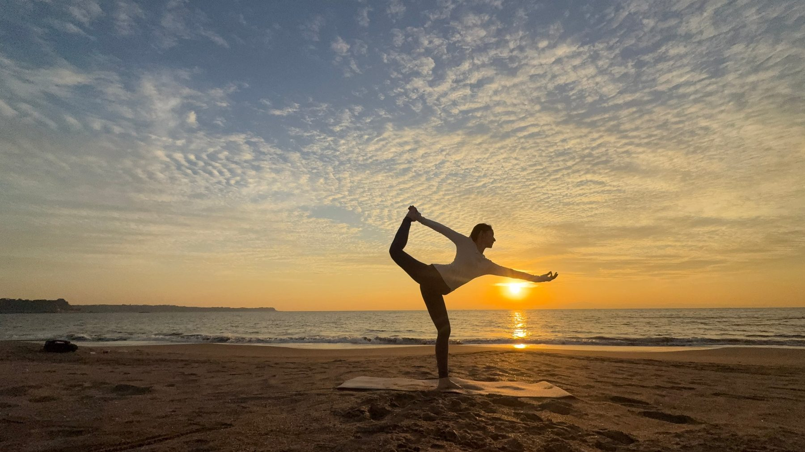
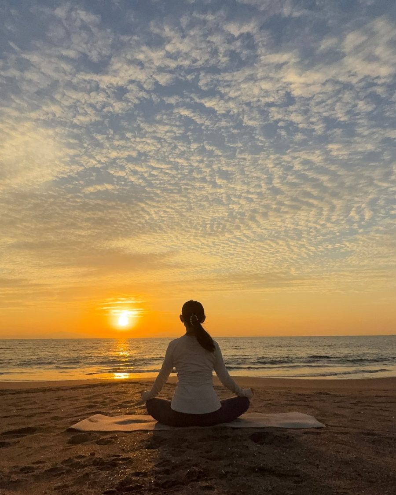
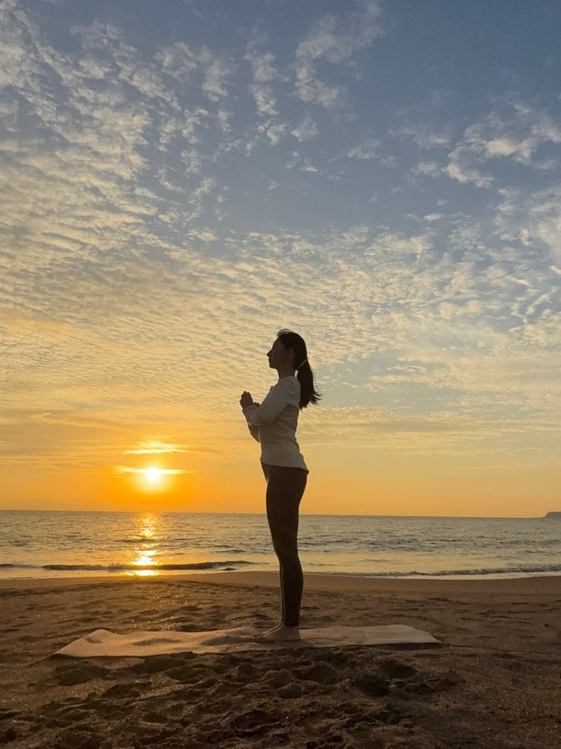
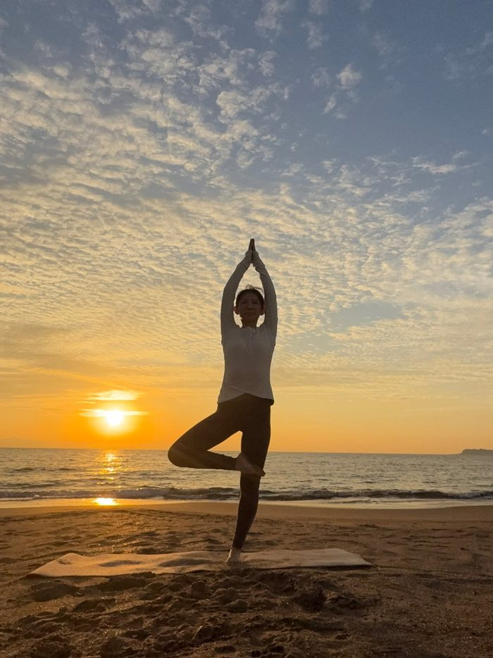
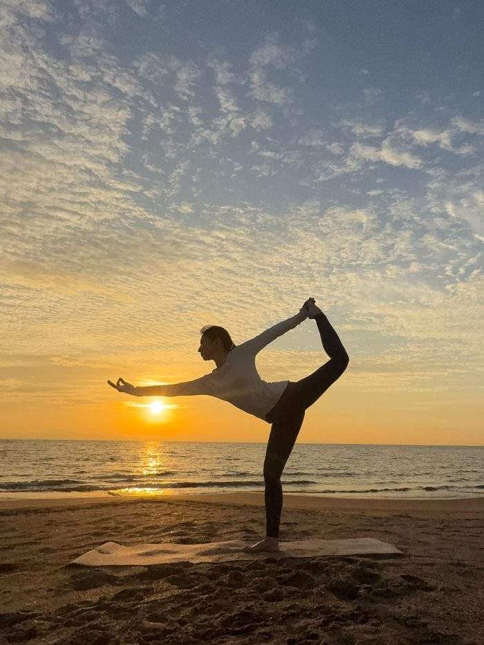
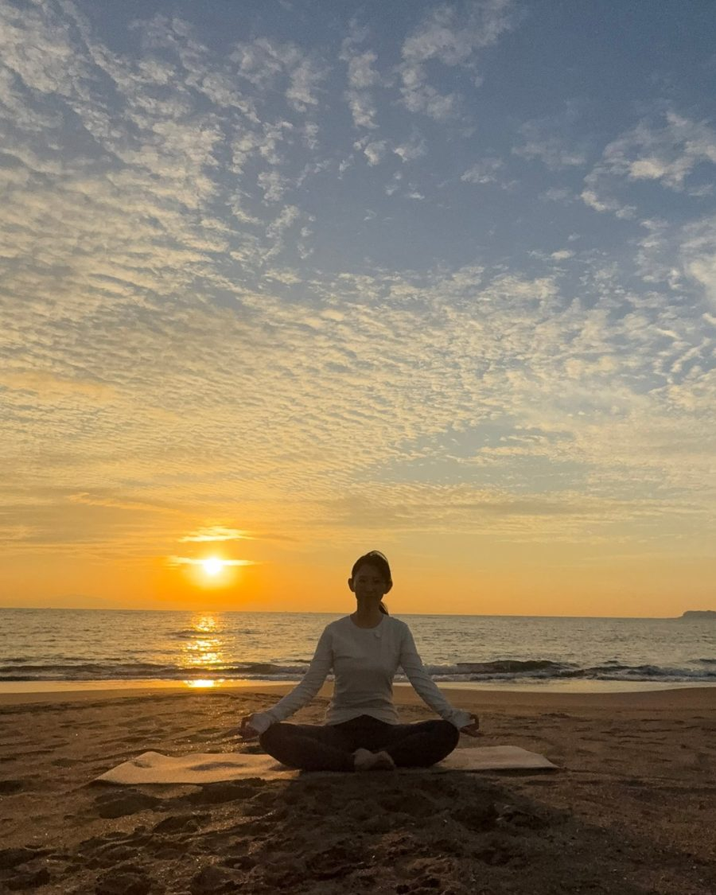
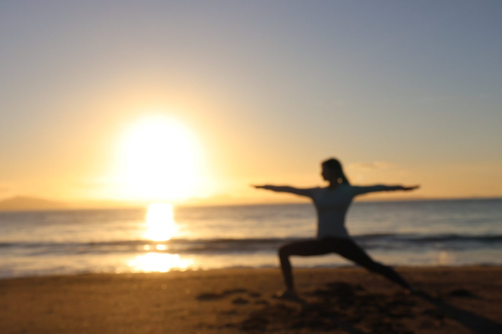

<title>MENTRE YOGA</title>
<meta name="claude:viewport-fit-sides" content="cover">
<meta name="description" content="ヨガ×アドラー心理学のメンタルトレーニング「メントレヨガ」。体を整えると、心が整い、人生が整う。">
<link rel="preconnect" href="https://fonts.googleapis.com">
<link rel="preconnect" href="https://fonts.gstatic.com" crossorigin>
<link rel="stylesheet" href="https://fonts.googleapis.com/css2?family=Italiana&family=Shippori+Mincho:wght@500;700&family=Zen+Kaku+Gothic+New:wght@400;500&display=swap">
<style>
/* Layout: 朝の海辺を上から下へ歩くように。光の差す hero → 考え方 → 朝の流れ（実際の順番）→ 声かけ → 講師 → 参加方法 */
:root{
  --bg:#fbf8f1;          /* 朝の砂浜 */
  --bg-alt:#f2ece0;      /* 少し陰った砂 */
  --surface:#ffffff;
  --ink:#1d3340;         /* 深い海 */
  --ink-soft:#4d6470;
  --gold:#b08a3e;        /* シャンパンゴールド */
  --gold-soft:#e7d6ae;
  --aqua:#6fa9b0;        /* 浅瀬 */
  --line:#e3dac8;
  --hero-veil:linear-gradient(90deg,rgba(251,248,241,.9) 0%,rgba(251,248,241,.72) 30%,rgba(251,248,241,0) 50%);
  --f-wordmark:"Italiana","Times New Roman",serif;
  --f-display:"Shippori Mincho","Hiragino Mincho ProN","Yu Mincho",serif;
  --f-body:"Zen Kaku Gothic New","Hiragino Sans","Yu Gothic",sans-serif;
}
@media (prefers-color-scheme:dark){:root:not([data-theme="light"]){
  --bg:#0f1d26;--bg-alt:#14262f;--surface:#182d38;--ink:#efe7d6;--ink-soft:#b5c2c4;
  --gold:#d8b46a;--gold-soft:#5c4a26;--aqua:#7fbcc2;--line:#2a3e48;
  --hero-veil:linear-gradient(90deg,rgba(15,29,38,.9) 0%,rgba(15,29,38,.7) 30%,rgba(15,29,38,0) 50%);
  color-scheme:dark}}
:root[data-theme="dark"]{
  --bg:#0f1d26;--bg-alt:#14262f;--surface:#182d38;--ink:#efe7d6;--ink-soft:#b5c2c4;
  --gold:#d8b46a;--gold-soft:#5c4a26;--aqua:#7fbcc2;--line:#2a3e48;
  --hero-veil:linear-gradient(90deg,rgba(15,29,38,.9) 0%,rgba(15,29,38,.7) 30%,rgba(15,29,38,0) 50%);
  color-scheme:dark}

*{box-sizing:border-box}
body{background:var(--bg);color:var(--ink);font-family:var(--f-body);font-size:16px;line-height:1.95;letter-spacing:.03em}
h1,h2,h3{font-family:var(--f-display);font-weight:500;text-wrap:balance;margin:0;line-height:1.5}
p{margin:0}
a{color:inherit}
a:focus-visible{outline:2px solid var(--gold);outline-offset:3px}
.wrap{max-width:1080px;margin:0 auto;padding-left:max(20px,env(safe-area-inset-left,0px));padding-right:max(20px,env(safe-area-inset-right,0px))}
.eyebrow{font-family:var(--f-wordmark);font-size:.95rem;letter-spacing:.32em;color:var(--gold);text-transform:uppercase}
section{padding-block:clamp(72px,10vw,128px)}

/* hero */
.hero{position:relative;min-height:min(86vh,760px);display:flex;align-items:center;overflow:hidden;padding-block:96px}
.hero-img{position:absolute;inset:0;width:100%;height:100%;object-fit:cover;object-position:58% center;max-width:none}
.hero::before{content:"";position:absolute;inset:0;background:var(--hero-veil);z-index:1}
.hero .wrap{position:relative;z-index:2;width:100%}
.hero-copy{max-width:540px;display:flex;flex-direction:column;gap:22px}
.wordmark{font-family:var(--f-wordmark);font-size:clamp(2.6rem,6vw,4.4rem);letter-spacing:.14em;line-height:1;color:var(--ink)}
.wordmark span{color:var(--gold)}
.hero h1{font-size:clamp(1.35rem,2.6vw,1.9rem);line-height:1.8}
.hero p{color:var(--ink-soft);max-width:30em}
.cta-row{display:flex;flex-wrap:wrap;gap:14px;margin-top:6px}
.btn{display:inline-flex;align-items:center;gap:10px;padding:14px 28px;border-radius:999px;text-decoration:none;font-weight:500;letter-spacing:.08em;transition:transform .3s,background .3s}
.btn-gold{background:linear-gradient(120deg,#c9a456,#a8812f);color:#fffaf0;box-shadow:0 10px 30px -12px rgba(176,138,62,.8)}
.btn-ghost{border:1px solid var(--gold);color:var(--ink)}
.btn:hover{transform:translateY(-2px)}

/* belief */
.belief{text-align:center}
.belief .wrap{display:flex;flex-direction:column;align-items:center;gap:28px}
.belief h2{font-size:clamp(1.5rem,3.4vw,2.3rem);line-height:1.9}
.belief h2 em{font-style:normal;background:linear-gradient(transparent 62%,var(--gold-soft) 62%)}
.belief p{max-width:34em;color:var(--ink-soft)}
.trio{display:flex;gap:clamp(18px,4vw,48px);justify-content:center;flex-wrap:wrap;margin-top:8px}
.trio div{font-family:var(--f-display);font-size:clamp(1.4rem,3vw,1.9rem);width:5.2em;height:5.2em;border-radius:50%;display:grid;place-items:center;border:1px solid var(--gold);color:var(--ink);position:relative}
.trio div::after{content:"";position:absolute;inset:7px;border-radius:50%;border:1px solid var(--line)}

/* pitcher */
.pitcher{background:var(--bg-alt)}
.split{display:grid;grid-template-columns:1fr 1fr;gap:clamp(32px,6vw,80px);align-items:center}
.split>*{min-width:0}
.split>img{width:100%;aspect-ratio:4/5;object-fit:cover;border-radius:220px 220px 6px 6px}
.split .text{display:flex;flex-direction:column;gap:20px}
.split h2{font-size:clamp(1.4rem,3vw,2rem)}
.split p{color:var(--ink-soft)}
.quote{font-family:var(--f-display);font-size:1.15rem;color:var(--ink);border-left:2px solid var(--gold);padding-left:18px}

/* flow */
.flow-head{display:flex;flex-direction:column;gap:14px;margin-bottom:48px;max-width:36em}
.flow-head h2{font-size:clamp(1.4rem,3vw,2rem)}
.flow-head p{color:var(--ink-soft)}
.flow{list-style:none;margin:0;padding:0;display:grid;grid-template-columns:repeat(4,1fr);gap:0;border-top:1px solid var(--line)}
.flow li{padding:28px 22px 8px;border-right:1px solid var(--line);display:flex;flex-direction:column;gap:12px;min-width:0}
.flow li:last-child{border-right:0}
.flow .num{font-family:var(--f-wordmark);font-size:2.6rem;color:var(--gold);line-height:1}
.flow h3{font-size:1.2rem}
.flow p{font-size:.94rem;color:var(--ink-soft)}

/* words */
.words{background:var(--bg-alt)}
.words-grid{display:grid;grid-template-columns:repeat(3,1fr);gap:24px;margin-top:44px}
.word{background:var(--surface);padding:32px 28px;border-radius:4px;display:flex;flex-direction:column;gap:14px;min-width:0}
.word .pose{font-size:.85rem;letter-spacing:.2em;color:var(--aqua)}
.word h3{font-size:1.25rem;line-height:1.7}
.word p{font-size:.94rem;color:var(--ink-soft)}

/* teacher */
.teacher .split>img{border-radius:6px 6px 220px 220px}
.creds{display:flex;flex-wrap:wrap;gap:10px;list-style:none;padding:0;margin:4px 0 0}
.creds li{font-size:.84rem;padding:6px 14px;border:1px solid var(--gold-soft);border-radius:999px;color:var(--ink)}
.name{display:flex;flex-direction:column;gap:2px}
.name small{font-family:var(--f-wordmark);letter-spacing:.24em;color:var(--gold);font-size:.95rem}
.facts{display:grid;grid-template-columns:repeat(3,1fr);gap:12px;margin-top:6px}
.facts div{display:flex;flex-direction:column;border-top:1px solid var(--gold);padding-top:10px}
.facts b{font-family:var(--f-display);font-size:1.6rem;font-weight:500;font-variant-numeric:tabular-nums}
.facts span{font-size:.8rem;color:var(--ink-soft)}

/* join */
.join{position:relative;overflow:hidden;text-align:center;color:#fbf6ea}
.join-img{position:absolute;inset:0;width:100%;height:100%;object-fit:cover;max-width:none}
.join::before{content:"";position:absolute;inset:0;background:linear-gradient(180deg,rgba(16,36,48,.55),rgba(16,36,48,.78));z-index:1}
.join .wrap{position:relative;z-index:2;display:flex;flex-direction:column;align-items:center;gap:26px}
.join h2{font-size:clamp(1.5rem,3.4vw,2.3rem);color:#fbf6ea}
.join p{max-width:32em;color:#e8e1d0}
.ways{display:grid;grid-template-columns:repeat(3,1fr);gap:16px;width:100%;margin-top:10px}
.way{border:1px solid rgba(231,214,174,.5);padding:24px 20px;border-radius:4px;display:flex;flex-direction:column;gap:8px;background:rgba(16,36,48,.35);min-width:0}
.way b{font-family:var(--f-display);font-weight:500;font-size:1.1rem;color:#f3dfae}
.way span{font-size:.9rem;color:#e8e1d0}
.join .btn-ghost{color:#fbf6ea;border-color:#e7d6ae}

.gallery{display:grid;grid-template-columns:repeat(3,1fr);gap:16px;margin:56px 0 0}
.gallery figure{margin:0;display:flex;flex-direction:column;gap:10px;min-width:0}
.gallery img{width:100%;aspect-ratio:3/4;object-fit:cover;border-radius:4px}
.who{display:flex;align-items:center;gap:18px}
.avatar{width:84px;height:84px;border-radius:50%;object-fit:cover;border:2px solid var(--gold-soft);flex:none}
footer{padding-block:40px;text-align:center;font-size:.82rem;color:var(--ink-soft)}
footer .wordmark{font-size:1.6rem;display:block;margin-bottom:8px}

/* motion: 光がゆっくり満ちる */
@media (prefers-reduced-motion:no-preference){
  .hero-img{animation:breathe 18s ease-in-out infinite alternate}
  @keyframes breathe{from{transform:scale(1)}to{transform:scale(1.06)}}
  .hero-copy>*{animation:rise 1.2s cubic-bezier(.2,.7,.2,1) both}
  .hero-copy>*:nth-child(2){animation-delay:.15s}.hero-copy>*:nth-child(3){animation-delay:.3s}
  .hero-copy>*:nth-child(4){animation-delay:.45s}.hero-copy>*:nth-child(5){animation-delay:.6s}
  @keyframes rise{from{transform:translateY(14px)}to{transform:none}}
}

@media (max-width:820px){
  .split{grid-template-columns:1fr}
  .split>img{max-width:420px;margin:0 auto}
  .flow{grid-template-columns:1fr 1fr}
  .flow li:nth-child(2){border-right:0}
  .words-grid,.ways{grid-template-columns:1fr}
  .gallery{grid-template-columns:repeat(3,1fr);gap:8px}
  .hero{--hero-veil:linear-gradient(180deg,rgba(251,248,241,.25) 0%,rgba(251,248,241,.88) 55%)}
}
@media (max-width:820px) and (prefers-color-scheme:dark){:root:not([data-theme="light"]) .hero{--hero-veil:linear-gradient(180deg,rgba(15,29,38,.3) 0%,rgba(15,29,38,.9) 55%)}}
@media (max-width:820px){:root[data-theme="dark"] .hero{--hero-veil:linear-gradient(180deg,rgba(15,29,38,.3) 0%,rgba(15,29,38,.9) 55%)}}
@media (max-width:480px){
  .flow{grid-template-columns:1fr}
  .flow li{border-right:0;border-bottom:1px solid var(--line);padding-inline:0}
  .facts b{font-size:1.3rem}
  .hero{align-items:flex-end}
}
</style>

<header class="hero">
  
  <div class="wrap">
    <div class="hero-copy">
      <p class="eyebrow">Yoga × Mental Training</p>
      <div class="wordmark">MENTRE <span>YOGA</span></div>
      <h1>体を整えると、心が整う。<br>心が整うと、人生が整う。</h1>
      <p>ヨガとアドラー心理学をひとつにした、心と体のメンタルトレーニング。自分を責めるクセをほどいて、思い込みの制限を外していく時間です。</p>
      <div class="cta-row">
        <a class="btn btn-gold" href="https://www.tiktok.com/@50kayo" target="_blank" rel="noopener">朝のLIVEに参加する</a>
        <a class="btn btn-ghost" href="#join">無料セッションについて</a>
      </div>
    </div>
  </div>
</header>

<main>
  <section class="belief">
    <div class="wrap">
      <p class="eyebrow">Our Belief</p>
      <h2>大切なのは、<em>自分を許す・癒す・満たす</em>こと。</h2>
      <p>すべては鏡です。自分を許せていると、人をジャッジしなくなる。自分が満たされていると、誰かに否定されても、自分として立っていられる。メントレヨガは、その「満たす」を毎朝の習慣にするために生まれました。</p>
      <div class="trio" aria-label="メントレヨガの3つの柱">
        <div>許す</div><div>癒す</div><div>満たす</div>
      </div>
    </div>
  </section>

  <section class="pitcher">
    <div class="wrap split">
      
      <div class="text">
        <p class="eyebrow">Milk Pitcher</p>
        <h2>空のピッチャーから、<br>ミルクは注げない。</h2>
        <p>誰かのためにがんばり続けて、自分のことは後回し。それは優しさのようでいて、少しずつ自分をすり減らす自己犠牲です。</p>
        <p class="quote">まず自分を満たす。あふれた分が、自然と周りへの愛と貢献になる。</p>
        <p>メントレヨガでは、ポーズのひとつひとつに心の声かけを重ねて、自分を満たす感覚を体で覚えていきます。</p>
      </div>
    </div>
  </section>

  <section>
    <div class="wrap">
      <div class="flow-head">
        <p class="eyebrow">Morning Flow</p>
        <h2>朝のメントレヨガの流れ</h2>
        <p>TikTok LIVEで毎朝お届けしている、心と体を順番に整える流れです。</p>
      </div>
      <ol class="flow">
        <li><span class="num">01</span><h3>俯瞰の瞑想</h3><p>自分は真ん中の核。そのまわりを取り巻く感情を、外側からただ眺めます。ジャッジも「なぜ」もいりません。</p></li>
        <li><span class="num">02</span><h3>体をほぐす</h3><p>首・肩・前屈・ツイスト。動く体の事実を見て、動いてくれる自分に「ありがとう」を伝えます。</p></li>
        <li><span class="num">03</span><h3>アファメーション</h3><p>視線を上げて、過去の延長ではない「こうだったら最高」の未来を、ワクワクと細かく思い描きます。</p></li>
        <li><span class="num">04</span><h3>体幹を整える</h3><p>プランクや腹筋で芯をつくり、最後は全身にエネルギーが満ちる「今ここ」を味わいます。</p></li>
      </ol>
      <div class="gallery">
        <figure></figure>
        <figure></figure>
        <figure></figure>
      </div>
    </div>
  </section>

  <section class="words">
    <div class="wrap">
      <p class="eyebrow">Words in Poses</p>
      <div class="words-grid">
        <article class="word">
          <span class="pose">前屈</span>
          <h3>「ここまでしか」を<br>「ここまで動く」に</h3>
          <p>開かないと感じたら、自分をジャッジしているサイン。まあいいか、と手放して、この角度まで動けている事実を見つめます。</p>
        </article>
        <article class="word">
          <span class="pose">ツイスト</span>
          <h3>振り返って、<br>積み重ねに感謝する</h3>
          <p>朝起きた、挨拶をした。小さな積み重ねを認めます。お腹をねじると腸が整い、自律神経も落ち着きやすくなります。</p>
        </article>
        <article class="word">
          <span class="pose">天井を見上げる</span>
          <h3>視線を上げると、<br>気分も上がる</h3>
          <p>お金・時間・能力に関係なく描く最高の未来。頭を腰より下げるポーズでは、副交感神経が働いてゆったりリラックスできます。</p>
        </article>
      </div>
    </div>
  </section>

  <section class="teacher">
    <div class="wrap split">
      
      <div class="text">
        <p class="eyebrow">Instructor</p>
        <div class="who"><div class="name"><h2>華容</h2><small>Kayo Momose</small></div></div>
        <p>株式会社トライフル代表。ヨガインストラクター・アドラー流メンタルトレーナー。ホットヨガに出会ってすぐ「ヨガを一生やろう」と決め、2018年に自治会館と自宅でヨガスクールを開講。自己受容・コーチング・内観を学び、ヨガと心理学を融合したメントレヨガを開発しました。</p>
        <ul class="creds">
          <li>E-RYT 500</li><li>YACEP</li><li>RPYT（マタニティヨガ）</li><li>自己肯定感アカデミー認定講師</li><li>筋膜リリースセラピスト</li>
        </ul>
        <div class="facts">
          <div><b>2018</b><span>ヨガ指導スタート</span></div>
          <div><b>2,000h</b><span>延べクラス時間</span></div>
          <div><b>53歳</b><span>アラフィフ世代と一緒に</span></div>
        </div>
      </div>
    </div>
  </section>

  <section class="join" id="join">
    
    <div class="wrap">
      <p class="eyebrow">Join</p>
      <h2>まずは、朝の10分から。</h2>
      <p>レッスンはすべてオンライン。おうちから、全国どこからでも参加できます。心と体の相談ができる無料セッションは、LINE登録からお申し込みいただけます。</p>
      <div class="ways">
        <div class="way"><b>朝のTikTok LIVE</b><span>瞑想からアファメーションまで、毎朝いっしょに整えます。</span></div>
        <div class="way"><b>無料セッション</b><span>LINE登録で申込み。登録特典のレシピやワークシートもお届けします。</span></div>
        <div class="way"><b>オンラインレッスン</b><span>画面越しに、おうちのリビングがヨガスタジオに。</span></div>
      </div>
      <div class="cta-row">
        <a class="btn btn-gold" href="https://www.tiktok.com/@50kayo" target="_blank" rel="noopener">TikTok @50kayo を見る</a>
      </div>
    </div>
  </section>
</main>

<footer>
  <span class="wordmark">MENTRE <span style="color:var(--gold)">YOGA</span></span>
  © 株式会社トライフル
</footer>
